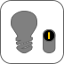
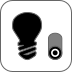

Cyprinus carpio Linnaeus, 1758
Sensory system Mouth Barbels (2 pairs) 1 Nostrils (2 pairs) 1 Eye Cephalic sensory pores 1 Lateral line
Respiratory system Operculum
Locomotor system Pectoral fin Pelvic fin Dorsal fin Anal fin Caudal fin
Excretory & reproductive system Anus Urogenital papilla
None
1: unclear/indistinguishable 2: not visible
Digestive system Pharyngeal bones & teeth 2 Liver Gall bladder 2 Intestines Anus 1
Locomotor system Swim bladder
Cardiovascular system Heart
Respiratory system Gills (4 pairs of arches)
Lymphatic system Spleen 2
Excretory system Head kidney Ventral lobe of kidney
Reproductive system Testes Urogenital papilla 1
Digestive system Pharyngeal bones & teeth Liver Gall bladder 2 Intestines Anus 1
Lymphatic system Spleen